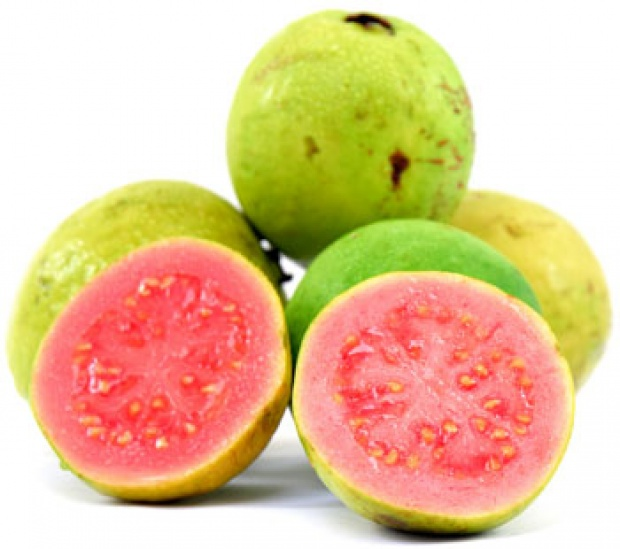

DETAIL :
Manfaat :
Buah jambu biji mengandung banyak vitamin dan serat sehingga cocok dikonsumsi untuk menjaga kesehatan.
Warna daging jambu biji yang merah mengidikasikan jambu biji kaya akan vitamin A untuk kesehatan mata dan antioksidan.
Buah jambu biji cocok dikonsumsi di siang hari karena buahnya segar dan mendinginkan badan.
Salah satu kandungan nutrisi yang terdapat pada jambu yang bermanfaat untuk tubuh adalah asam askorbat atau vitamin C.
Di dalam jambu biji terdapat 126 miligram vitamin C lebih dari 90 miligram asam askorbat diperlukan untuk orang orang
setipa harinya atau untuk perempuan sekitar 75 miligram. Menurut Linus pauling institute.
Vitamin C membantu bagian menjaga bagian setiap jaringan tubuh anda.
Vitamin C sendiri berperan untuk menumbuhkan kolagen.
Protein yang mendukung sel dan jaringan tubuh tetap utuh dan tanpa vitamin C tubuh dapat mengalami pecah pembuluh darah.
harga : 15.000